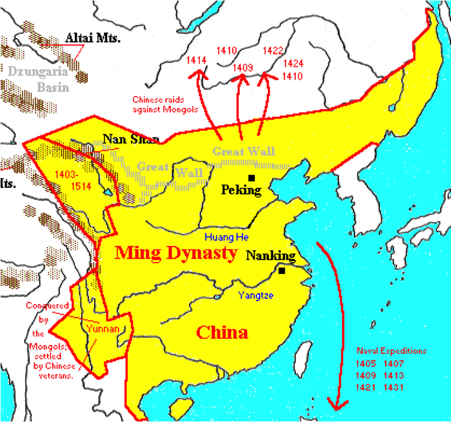
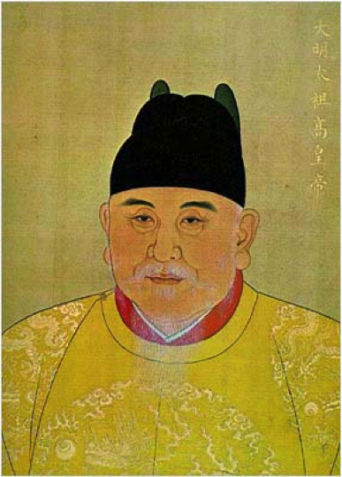
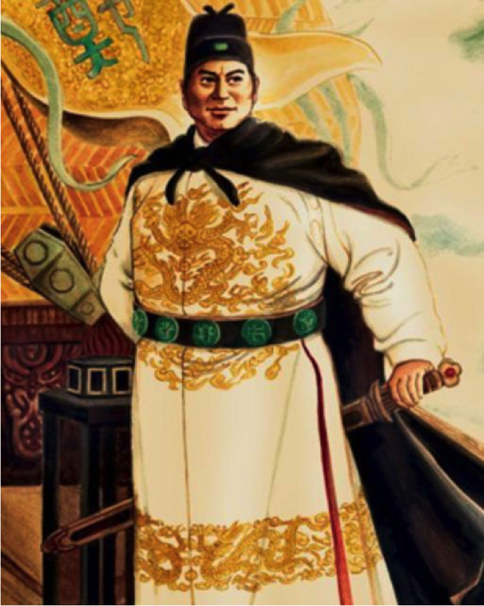

Ming Dynasty China
 If you were able to be a traveler in time and go back to the 15th century, Ming China would be the place to start. Ming China was heir to a long tradition of effective governance, sophisticated artistic achievements, and a highly productive economy.
 The Ming (means “brilliant”) ruled from 1368-1644 and re-established the cycle of Chinese dynasties. They would be the dynasty in power when the Europeans arrived. The early decades of the dynasty saw the effort to eliminate all traces of foreign (Mongol) rule, discouraging the use of Mongol names and dress, while promoting Confucian learning based the models of the Han, T’ang, and Song dynasties. Culturally, the Ming looked to the past (pre-Mongol). Politically, the Ming reestablished the civil service examination system that the Mongols had neglected and they created a highly centralized government based around the emperor.
A cadre of eunuchs personally loyal to the emperor had great authority, much to the chagrin of the official bureaucrats (as castrated men, there was no fear of them trying to seize power and trying to create a dynasty). The first Ming emperor (Hongwu) wanted to eliminate all governmental corruption (a major problem under the Mongols). He tried to impress all officials with the honesty, loyalty, and discipline he expected from them through the practice of public beatings for those found guilty of corruption or incompetence.
One student at the imperial academy dared to dispute the lessons of one of his teachers and was beheaded…his severed head was put on a pole and hung at the academy entrance. There wasn’t a problem with order in the classroom after that.
In 1402, a new emperor was crowned…Yongle (Yung la) =emperor of perpetual happiness. He moved the capital of China from Nanjing to Beijing (1402)…an area to the north not far from the Great Wall which had been depopulated by the Mongols.
 Emperor Yongle (r 1402-1422) sponsored an enormous Encyclopedia of some 4,000+ volumes.
With contributions from over 2,000 scholars, this work was to compile all previous writing on history, geography, ethics, government and more.
Emperor Yongle (r 1402-1422) sponsored an enormous Encyclopedia of some 4,000+ volumes.
With contributions from over 2,000 scholars, this work was to compile all previous writing on history, geography, ethics, government and more.
Yongle is also known for building the famous Forbidden City in Beijing. Starting in 1406, Yongle had over 1,000,000 peasants conscripted to build what would become the largest palace complex in the world.
Thousands of peasants were sent into the forests of southwestern China where they were to cut great timbers for construction. These people were at the mercy of disease, starvation, and wild animals…it is believed over ½ of them died. It would take four years to get these timbers from the forests to Beijing and when construction began in 1417, it would take 15 years to complete.
The Ming vigorously tried to repair the damage of the Mongol years by restoring millions of acres to cultivation; rebuilding canals, reservoirs, and irrigation works; and planting, according to some estimates, over a billion trees to reforest China.
As a result, the Chinese economy rebounded, both international and domestic trade flourished, and the population grew. By virtually every account, Ming China was the best governed and most prosperous country in the world.
China also undertook the largest and most impressive maritime expeditions the world had ever seen. Since the 11th century, Chinese sailors and traders had been a major presence in the South China Sea and in Southeast Asian port cities.
 An enormous fleet, commissioned by Emperor Yongle himself, was launched in 1405, followed over the next 28 years by six more such expeditions. On board the more than 300 ships were nearly 30,000 sailors and soldiers, 180 physicians, hundreds of government officials, 5 astrologers, 7 high-ranking “grand eunuchs,” carpenters, tailors, accountants, merchants, translators, and cooks.
Visiting many ports in Southeast Asia, Indonesia, India, Arabia, and East Africa, these fleets, captained by Admiral Zheng He (a Muslim eunuch from western China), sought to bring distant peoples and states into the Chinese tribute system.
Dozens of local rulers accompanied the fleets back to China, where they presented the emperor with gifts (and tribute), performed the required rituals of submission (kowtow), and in return, received abundant gifts, titles, and trading opportunities. Chinese officials were amused by some of the exotic products found abroad, especially ostriches, zebras, and giraffes brought back for the royal zoo.
Officially described as “bringing order to the world,” Zheng He’s expeditions sought to establish Chinese power and prestige in the Indian Ocean and to exert Chinese control over foreign trade in the region.